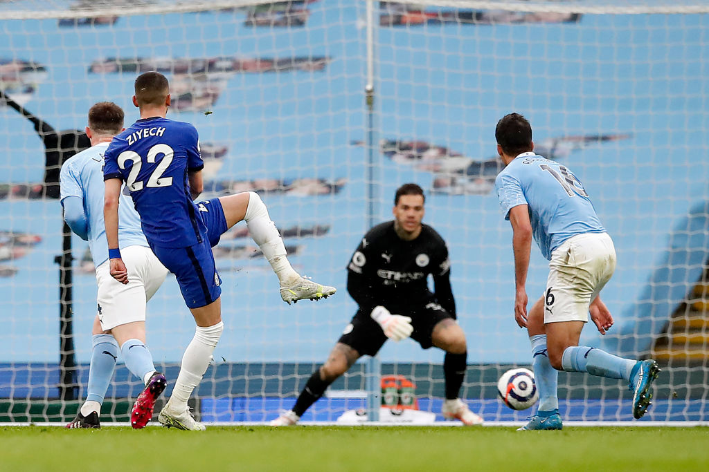

HAKIM ZIYECH
HAKIM ZIYECHมิดฟิลด์ตัวรุกที่ถนัดเท้าซ้าย โชว์ผลงานโดดเด่นในการเล่นทางกราบขวาให้กับอาแย็กซ์ แต่เขาสามารถประจำการทางฝั่งซ้าย หรือด้านหลังกองหน้าได้เช่นกัน
ตั้งแต่เดือนมีนาคมเป็นต้นมา ซิเยคลงเล่นบทบาทสำคัญให้กับโธมัส ทูเคิ่ล โดยทำผลงานได้สม่ำเสมอที่สุดกับเชลซี หลังจากทิ้งอาการบาดเจ็บแฮมสตริงเอาไว้เบื้องหลัง ทำให้เขาได้ปรากฎตัวในเกมใหญ่ ๆ บางนัด
ผลงานที่สำคัญที่สุดคือ 2 แมตช์กับแมนเชสเตอร์ ซิตี้ ซึ่งคู่แข่งคงปวดหัวในการรับมือกับปีกรายนี้ เกมแรกเขาจบสกอร์จากบอลของติโม แวร์เนอร์ กลายเป็นประตูในเอฟเอ คัพ รอบรองชนะเลิศ ที่ช่วยพวกเราผ่านเข้าไปชิงดำที่เวมบลีย์ ถึงแม้ว่าจะแพ้ให้กับเลสเตอร์ในนัดชิงชนะเลิศก็ตาม โดยแมตช์ดังกล่าวเป็นการปราชัยแค่ครั้งเดียวในซีซั่นเมื่อมีซิเยคลงเล่นเป็นตัวจริง
ที่สำคัญไม่แพ้กัน ปีกชาวโมร็อกโก ทำประตูตีเสมอในครึ่งหลังของเรากับซิตี้ในพรีเมียร์ ลีก ก่อนที่มาร์กอส อลอนโซ่ จะยิงประตูช่วงท้ายเกม ซึ่งกลายเป็นผลการแข่งขันสำคัญที่ช่วยให้เราจบท็อปโฟร์ได้สำเร็จ
เขาได้โอกาสแสดงฝีเท้าในเวทีระดับโลกช่วงซัมเมอร์ 2018 โดยเป็นตัวจริงทุกนัดให้กับโมร็อกโกในรอบแบ่งกลุ่มของการแข่งขันเวิลด์ คัพ ที่ประเทศรัสเซีย ซึ่งแม้จะต้องตกรอบจากกลุ่มที่มียอดทีมอย่างสเปนและโปรตุเกส แต่โมร็อกโก ก็ได้รับคำชื่นชมจากเกมรุกของพวกเขา ที่มีซิเยคเป็นหัวใจสำคัญ จากนั้นในปีต่อมา เขาได้รับใช้ชาติในการแข่งขันแอฟริกัน คัพ ออฟ เนชั่นส์ที่ประเทศอียิปต์
SOCIAL MEDIA
 |
|